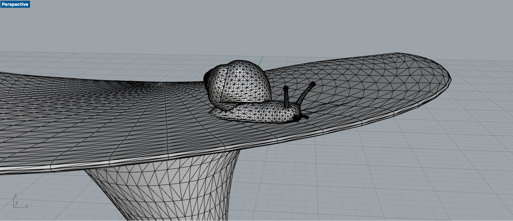

I found a mesh of a snail and a mushroom lamp that I wanted to combine together. The process was rather simple, in that I made sure that they were touching in Rhino, and then combined them together via BooleanUnion function to create a closed polysurface. Converting to stl did not prompt any errors within rapid prototyping.
Documentation for Assignment 5:
Rhino file
STL file